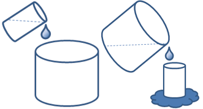
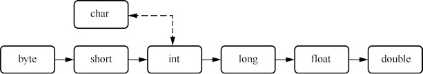
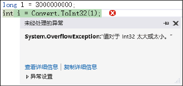

首页 > 编程笔记
C#数据类型转换（3种方法）
类型转换是将一个值从一种数据类型转换为另一种数据类型。例如，可以将 string 类型数据“457”转换为 int 类型数据，也可以将任意类型的数据转换为 string 类型数据。
数据类型转换有两种方式，即隐式转换与显式转换。如果从低精度数据类型向高精度数据类型转换，则永远不会溢出，并且总是成功的；而从高精度数据类型向低精度数据类型转换，必然会有信息丢失，甚至有可能失败。
这种转换规则就像图1所示的两个场景，高精度相当于大水杯，低精度相当于小水杯，大水杯可以轻松装下小水杯中所有的水，但小水杯无法装下大水杯中所有的水，装不下的部分必然会溢出。
在 C# 中，下列基本数据类型会涉及数据转换（不包括逻辑类型），这些类型按精度从“低”到“高”排列的顺序为：
例如，将 int 类型的值隐式转换成 long 类型，代码如下：
如果遇到上面类型之间的转换，就需要用到 C# 中的显式类型转换。
显式类型转换也称为强制类型转换，需要在代码中明确地声明要转换的类型。如果要把高精度的变量转换为低精度的变量，就需要使用显式类型转换。
显式类型转换的一般形式如下：
例如，下面的代码用来把变量 x 转换为 float 类型：
如果在实际开发中遇到这种情况，可能会引起大的漏洞。那么在遇到这种类型的错误时，有没有一种方式能够向开发人员报告错误呢？
答案是有的。C# 中提供了 Convert 类，该类也可以进行显式类型转换，它的主要作用是将一种基本数据类型转换为另一种基本数据类型。
Convert 类的常用方法及说明如表1所示。
例如，定义一个 double 类型的变量 x，并赋值为 198.99，使用 Convert 类将其显式转换为 int 类型，代码如下：
这样，开发人员即可根据图3中的错误提示对程序代码进行修改，以避免程序出现逻辑错误。
数据类型转换有两种方式，即隐式转换与显式转换。如果从低精度数据类型向高精度数据类型转换，则永远不会溢出，并且总是成功的；而从高精度数据类型向低精度数据类型转换，必然会有信息丢失，甚至有可能失败。
这种转换规则就像图1所示的两个场景，高精度相当于大水杯，低精度相当于小水杯，大水杯可以轻松装下小水杯中所有的水，但小水杯无法装下大水杯中所有的水，装不下的部分必然会溢出。

图1：数据类型转换的示意图
图1：数据类型转换的示意图
C#隐式类型转换
隐式类型转换就是不需要声明就能进行的转换。进行隐式类型转换时，编译器不需要进行检查就能自动进行转换。在 C# 中，下列基本数据类型会涉及数据转换（不包括逻辑类型），这些类型按精度从“低”到“高”排列的顺序为：
byte < short < int < long < float < double
其中，char 类型比较特殊，它可以与部分 int 类型数字兼容，且不会发生精度变化。

图2：隐式类型转换的兼容顺序图
图2：隐式类型转换的兼容顺序图
例如，将 int 类型的值隐式转换成 long 类型，代码如下：
int i = 927; //声明一个int类整型变量i并初始化为927 long j = i; //隐式转换成long类型
C#显式类型转换
有很多场合不能进行隐式类型转换，否则编译器会出现错误。例如，下面的类型转换在进行隐式转换时会出现错误：- int 类型转换为 short 类型——会丢失数据。
- int 类型转换为 uint 类型——会丢失数据。
- float 类型转换为 int 类型——会丢失小数点后面的所有数据。
- double 类型转换为 int 类型——会丢失小数点后面的所有数据。
- 数值类型转换为 char 类型——会丢失数据。
- decimal 类型转换为其他数值类型——decimal 类型的内部结构不同于整数和浮点数。
如果遇到上面类型之间的转换，就需要用到 C# 中的显式类型转换。
显式类型转换也称为强制类型转换，需要在代码中明确地声明要转换的类型。如果要把高精度的变量转换为低精度的变量，就需要使用显式类型转换。
显式类型转换的一般形式如下：
(类型说明符)表达式
其功能是把表达式的运算结果强制转换成类型说明符所表示的类型。例如，下面的代码用来把变量 x 转换为 float 类型：
(float) x；
显式类型转换可以解决高精度数据向低精度数据转换的问题，例如，将 double 类型的值 4.5 赋给 int 类型变量时，可以使用下面的代码实现：int i ; i = (int)4.5; //使用显式类型转换
C#使用Convert类进行转换
前面讲解了使用(类型说明符)表达式可以进行显式类型转换，现在使用下面的方式实现类型转换：
long l=3000000000;
int i = (int)l;
如果在实际开发中遇到这种情况，可能会引起大的漏洞。那么在遇到这种类型的错误时，有没有一种方式能够向开发人员报告错误呢？
答案是有的。C# 中提供了 Convert 类，该类也可以进行显式类型转换，它的主要作用是将一种基本数据类型转换为另一种基本数据类型。
Convert 类的常用方法及说明如表1所示。
| 方法 | 说明 |
|---|---|
| ToBoolean | 将指定的值转换为等效的布尔值 |
| ToByte | 将指定的值转换为 8 位无符号整数 |
| ToChar | 将指定的值转换为 Unicode 字符 |
| ToDateTime | 将指定的值转换为 DateTime |
| ToDecimal | 将指定的值转换为 Decimal 数字 |
| ToDouble | 将指定的值转换为双精度浮点数字 |
| ToInt32 | 将指定的值转换为 32 位有符号整数 |
| ToInt64 | 将指定的值转换为 64 位有符号整数 |
| ToSByte | 将指定的值转换为 8 位有符号整数 |
| ToSingle | 将指定的值转换为单精度浮点数字 |
| ToString | 将指定的值转换为与其等效的 String 表示形式 |
| ToUInt32 | 将指定的值转换为 32 位无符号整数 |
| ToUInt64 | 将指定的值转换为 64 位无符号整数 |
例如，定义一个 double 类型的变量 x，并赋值为 198.99，使用 Convert 类将其显式转换为 int 类型，代码如下：
double x = 198.99; //定义double类型变量并初始化 int y = Convert.ToInt32(x); //使用Convert类进行显式类型转换下面使用 Convert 类的 ToInt32 方法对前面的两行代码进行修改，修改后的代码如下：
long l=3000000000; int i =Convert.ToInt32(l);再次运行这两行代码，则会出现图3所示的错误提示。

图3：显式类型转换的错误提示
图3：显式类型转换的错误提示
这样，开发人员即可根据图3中的错误提示对程序代码进行修改，以避免程序出现逻辑错误。
关注公众号「站长严长生」，在手机上阅读所有教程，随时随地都能学习。内含一款搜索神器，免费下载全网书籍和视频。

微信扫码关注公众号